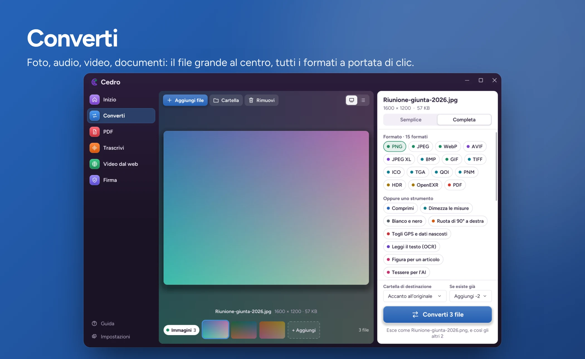
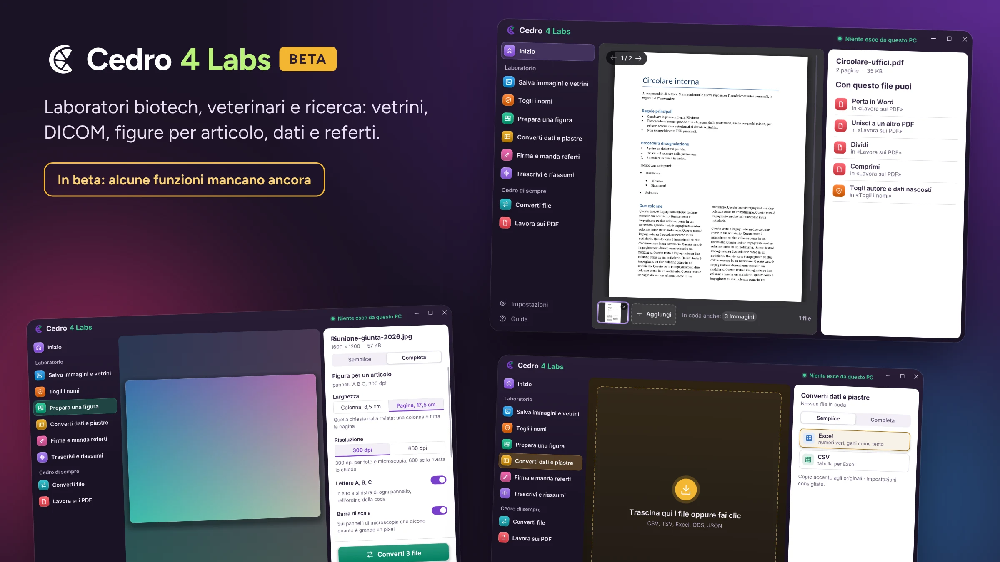

Salva immagini e vetrini
Vetrini digitali e file del microscopio, con canali, piani Z e valori originali.
SVS · NDPI · MRXS · CZI · ND2 · LIF · OME-TIFF
Cambia formato a foto, audio, video e documenti. Lavora sui PDF, trascrivi le riunioni, firma con la CNS. Tutto sul tuo computer: i file non vanno da nessuna parte.

Cosa fa
Trascini il file e Cedro apre l'attività giusta. La copia nuova compare accanto all'originale, che resta com'era. Scegli un'attività per vedere la sua pagina.
Perché fidarsi
0
Conversioni, OCR, trascrizione e riassunto girano sul tuo PC. Internet serve solo per gli aggiornamenti.
MIT
Tutto il sorgente è su GitHub, scritto da zero in Rust.
70+
Ogni file di ogni versione passa su VirusTotal, con il rapporto pubblico nelle note.
0 €
Niente abbonamenti, niente account, niente pubblicità.
Per i laboratori
Lo stesso Cedro, con le attività di un laboratorio al posto dei tipi di file. Apri un vetrino, togli i dati del paziente, prepara la figura per l'articolo. Le immagini non escono dal computer.

Vetrini digitali e file del microscopio, con canali, piani Z e valori originali.
SVS · NDPI · MRXS · CZI · ND2 · LIF · OME-TIFF
Anonimizza DICOM e toglie autori, GPS e dati nascosti da PDF, Office e foto.
DICOM · PDF · DOCX · XLSX · JPEG
Pannelli pronti per l'articolo, con la barra di scala presa dalla misura scritta nel file.
TIFF · PNG · PDF · barra in µm
CSV e TSV degli strumenti in Excel, e pacchetti dati con impronte SHA-256 per l'archivio.
CSV · TSV · XLSX · BagIt
Il referto in PDF, firmato con la smart card e pronto da spedire.
PDF/A · .p7m · CNS
Detti il referto o registri la riunione di gruppo. Il referto resta bozza finché numeri e parole decisive non sono confermati.
Word · TXT · glossario veterinario
| Area | Cosa c'è già | Cosa manca |
|---|---|---|
| Immagini | Aperio SVS, Hamamatsu NDPI, 3DHistech MRXS, Zeiss CZI, ND2, LIF, OME-TIFF, DICOM | Olympus VSI, DICOM da CD con DICOMDIR |
| Dati | CSV/TSV ↔ Excel, pacchetto BagIt con SHA-256 | Mappa delle piastre a colori |
| Privacy | Toglie nomi, autori, GPS e dati nascosti da PDF, Office, foto e DICOM | Altri formati proprietari |
| Voce | Trascrizione con glossario veterinario, riassunto, referti dettati | Referti già impaginati |
È una beta: se la usi in laboratorio controlla i risultati e dicci cosa non torna.
Scarica
Lo installi una volta e poi si aggiorna da solo. Ultima versione: 0.53.0, 16 novembre 2026.
Per quasi tutti i PC. Si installa solo per il tuo utente, senza diritti di amministratore.
Cedro-Setup-0.53.0.exe · 27 MBScarica per WindowsEstrai lo ZIP e apri cedro.exe. Niente da installare, va bene anche su una chiavetta.
Wayland con KDE Plasma o GNOME. Estrai e lancia ./install.sh, senza sudo.
Windows avvisa?
L'installatore non ha ancora la firma digitale. Clic su Ulteriori informazioni, poi Esegui comunque.
Dopo l'installazione
Cedro resta lì. Da lì apri la finestra, le conversioni e le impostazioni.
Cedro 4 Labs
Oppure dopo, in Impostazioni › Aspetto. È lo stesso programma.
Controllato a ogni versione. Ogni file passa su VirusTotal con più di 70 antivirus e il rapporto è nelle note della release. Su programmi non firmati può capitare una segnalazione isolata: il rapporto dice quale antivirus e puoi confrontare lo SHA-256 del file che hai scaricato.
Domande
No. Crea sempre una copia accanto all'originale, che resta com'era.
No. Conversioni, OCR, trascrizione e riassunto avvengono sul tuo computer. Internet serve per gli aggiornamenti, per scaricare i componenti la prima volta e per i video dal web.
Sì. La trascrizione gira sul tuo computer, anche con la scheda grafica se c'è, e il testo esce in Word, testo o sottotitoli. Internet serve solo la prima volta per scaricare il modello.
Sì, con titoli, tabelle ed elenchi veri. Funziona anche sulle scansioni, grazie all'OCR.
Sì. Firmi con la smart card (CNS) o con la chiavetta USB, e verifichi i file .p7m e i PDF firmati che ricevi.
Con Cedro 4 Labs sì: Aperio SVS, Hamamatsu NDPI, 3DHistech MRXS, Zeiss CZI, ND2, LIF, OME-TIFF e DICOM, anche con anonimizzazione.
Niente. Cedro è gratuito e il codice è aperto con licenza MIT.
Per ora no: Windows 10 e 11 e Linux con Wayland (KDE Plasma o GNOME).
No, è lo stesso Cedro con un aspetto pensato per i laboratori. Si sceglie nell'installatore o in Impostazioni › Aspetto, e si torna indietro in un clic.